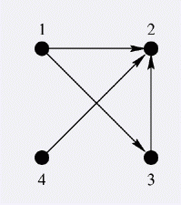

BZPRO
#2074. [POI2004]TUR
内存限制：64 MiB
时间限制：10 Sec
提交
提交记录
讨论
题目描述
国际X-Game 联盟组织了一个锦标赛. n 个参赛者从 1 到 n 标号. 比赛的规则是: 当剩下超过1个参赛者时, 随机抽取两个参赛者然后进行比赛. 输者退出比赛(X-Game比赛中没有平局) 然后不断重复. 最后剩下的人为胜者. 联盟有一个先前赛事的结果列表. 如果两个参赛者先前比过赛,那么在这次比赛中,如果两人相遇那么结果会和以前的一样. 但是如何两人以前没有比赛过, 那么结果是不可预料的,谁都可能赢. 联盟想知道有哪些参赛者可能会成为胜者.
输入格式
第一行一个数n, 1 <= n <= 100.000. 表示参赛者总数.接下来n 行表示先前比赛的结果: i+1 行包含一个整数 k_i, 0 <= k_i < n, 接着k_i 个参赛者编号, 上升排列表示参赛者i曾经赢过的人的编号.所有已知的赛事结果不会超过 1.000.000.
输出格式
行首一个整数表示可能会成为胜者的人的总数w ,接下来w 个数上升排列表示这些人的编号.
样例
样例输入
4
2 2 3
0
1 2
1 2
样例输出
3 1 3 4
数据范围与提示
